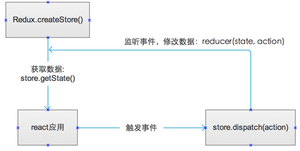
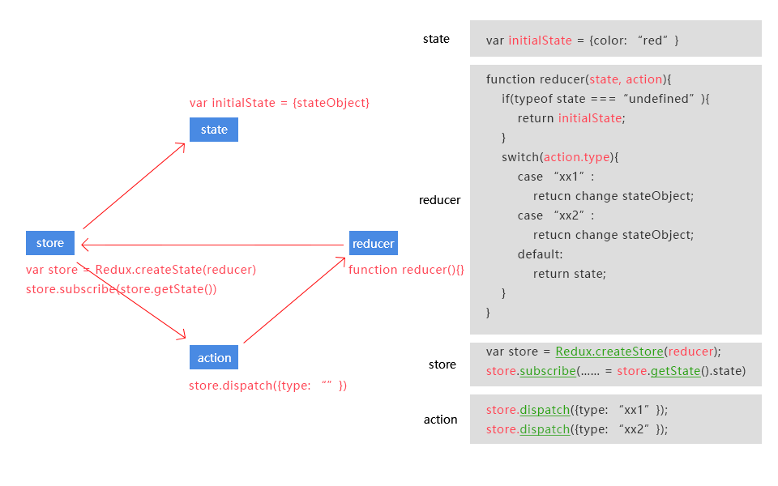

Redux 是 JavaScript 状态容器，提供可预测化的状态管理。
Redux 可以让你构建一致化的应用，运行于不同的环境（客户端、服务器、原生应用），并且易于测试。
React有props和state: props意味着父级分发下来的属性，state意味着组件内部可以自行管理的状态，并且整个React没有数据向上回溯的能力，也就是说数据只能单向向下分发，或者自行内部消化

a. action是纯声明式的数据结构，只提供事件的所有要素，不提供逻辑。
b. reducer是一个匹配函数，action的发送是全局的：所有的reducer都可以捕捉到并匹配与自己相关与否，相关就拿走action中的要素进行逻辑处理，修改store中的状态，不相关就不对state做处理原样返回。
c. store负责存储状态并可以被react api回调，发布action.
| redux实例描述 | |
|---|---|
| 代码 | 描述 |
| 运行模式 | initialState → action/reducer/store → state |
| redux 原理 |
store.dispatch({type: "", xxx: "xxx"}); function reducer(state, action){switch(action.type){case: return} var store = Redux.createStore(reducer) store.subscribe(store.getState()) |

| redux实例描述 | |
|---|---|
| 代码 | 描述 |
| 引入redux库 | <script src="build/redux.min.js"></script> |
| state 初始化状态 | var initialState = { color: 'red' }; |
| reducer 处理事件 |
function color(state, action) { if(typeof state === 'undefined') { return initialState } switch(action.type) { case 'RED' : return { color: 'red'}; case 'GREEN' : return { color: 'green'}; case 'TOGGLE' : return state.color === 'red' ? {color:'green'} : {color:'red'}; default : return state; } } |
| store 监听事件 |
var store = Redux.createStore(color); store.subscribe( function renderValue() { document.getElementById('colorEl').style.color = store.getState().color; } ); |
| action 触发事件 |
document.getElementById('red').addEventListener('click', function(){ store.dispatch({type: 'RED'}); }); document.getElementById('green').addEventListener('click', function(){ store.dispatch({type: 'GREEN'}); }); document.getElementById('toggle').addEventListener ('click', function(){ store.dispatch({type: 'TOGGLE'}); }); |